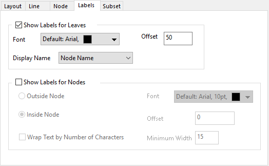

このタブを使用して、階層エッジバンドリングダイアグラムの葉とノードのラベルを制御できます。

葉のラベルを表示するかどうか、およびその表示方法を指定します。
ラベルのフォントと表示フォーマットを指定します。フォントの変更に加えて、このコントロールグループを使用すると、
葉ノードから半径に沿ったラベルのオフセットを指定します。このコントロールの単位はフォントの高さの％です。
ラベルとして何を表示するかを指定します。葉ノードの名前または列内のテキストを選択できます。
サブセットのノードのラベルを表示するかどうかを指定します。このグループは、レイアウトタブでサブセットのノードがオンになっている場合にのみ使用できます。
ノードの外側または内側にタイトルを表示するように指定します。
ノードラベルのフォントと表示フォーマットを指定します。このコントロールグループは葉ラベルのコントロールグループと同じです。
葉ノードから半径に沿ったラベルのオフセットを指定します。このコントロールの単位はフォントの高さの％です。このコントロールは、位置 = 外部ノードの場合にのみ使用できます。
テキストが最小幅ボックスに入力された文字数よりも長い場合に、テキストを折り返すかどうかを指定します。